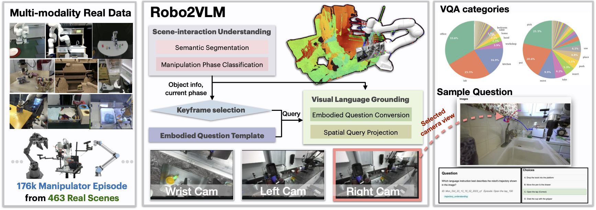
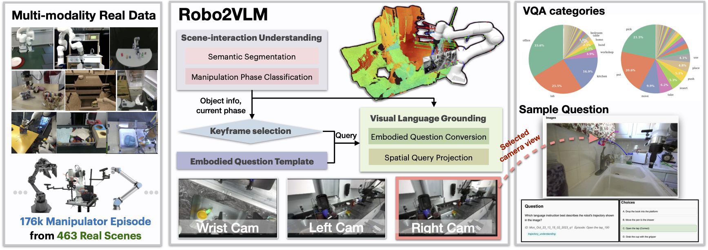

Robo2VLM Pipeline

Robo2VLM generates multi-modal real-world robot trajectories through (1) manipulation phase classification, (2) keyframe selection guided by scene and interaction cues, and (3) structured VQA question prototype.
Vision-Language Models (VLMs) acquire real-world knowledge and general reasoning ability through Internet-scale image-text corpora. They can augment robotic systems with scene understanding and task planning, and assist visuomotor policies that are trained on robot trajectory data. We explore the reverse paradigm — using rich, real, multi-modal robot trajectory data to enhance and evaluate VLMs. In this paper, we present Robo2VLM, a Visual Question Answering (VQA) dataset generation framework for VLMs. Given a human tele-operated robot trajectory, Robo2VLM derives ground-truth from non-visual and non-descriptive sensory modalities, such as end-effector pose, gripper aperture, and force sensing. Based on these modalities, it segments the robot trajectory into a sequence of manipulation phases. At each phase, Robo2VLM uses scene and interaction understanding to identify 3D properties of the robot, task goal, and the target object. The properties are used to generate representative VQA queries – images with textural multiple-choice questions – based on spatial, goal-conditioned, and interaction reasoning question templates. We curate Robo2VLM-1, a large-scale in-the-wild dataset with 684,710 questions covering 463 distinct scenes and 3,396 robotic manipulation tasks from 176k real robot trajectories. Results suggest that Robo2VLM-1 can benchmark and improve VLM capabilities in spatial and interaction reasoning.

Robo2VLM generates multi-modal real-world robot trajectories through (1) manipulation phase classification, (2) keyframe selection guided by scene and interaction cues, and (3) structured VQA question prototype.
Explore the Robo2VLM-1 dataset interactively using the Hugging Face dataset viewer below.
@misc{chen2025robo2vlmvisualquestionanswering,
title={Robo2VLM: Visual Question Answering from Large-Scale In-the-Wild Robot Manipulation Datasets},
author={Kaiyuan Chen and Shuangyu Xie and Zehan Ma and Pannag Sanketi and Ken Goldberg},
year={2025},
eprint={2505.15517},
archivePrefix={arXiv},
primaryClass={cs.RO},
url={https://arxiv.org/abs/2505.15517},
}